By Frank Savage, Development Lead, Xbox Advanced Technology Group
This white paper describes the various ways the Xbox® GPU custom-designed by NVIDIA® can antialias a scene.
The first method for antialiasing a scene is to turn on one of the various multisample modes. These can produce very good results. Unfortunately, this method requires increasing the size of the back buffer, rendering the scene to the larger back buffer, and scaling it back down using one of the multisample or supersample filters when it is copied to the front buffer. This can be a big performance hit because the size increase of the back buffer requires much more fill processing by the Xbox GPU. Here are the multisample modes and the back buffer sizes each of them require.
| Multisample Mode | Back Buffer Size | Scalable Back Buffer |
|---|---|---|
| None | 640×480 | Yes |
| 2x Multisample Linear Filter | 1280×480 | Yes |
| 2x Multisample Quincunx Filter | 1280×480 | No |
| 2x Supersample Linear Horizontal Filter | 1280×480 | Yes |
| 2x Supersample Linear Vertical Filter | 640×960 | Yes |
| 4x Multisample Linear Filter | 1280×960 | Yes |
| 4x Multisample Gaussian Filter | 1280×960 | No |
| 4x Supersample Linear Filter | 1280×960 | Yes |
| 4x Supersample Gaussian Filter | 1280×960 | No |
| 9x Multisample Gaussian Filter | 1920×1440 | No |
| 9x Supersample Gaussian Filter | 1920×1440 | No |
In multisample mode, each fragment is rendered once and copied to the extra fragments. In supersample mode, each fragment is rendered separately. The Xbox GPU needs to calculate four fragments for each resulting pixel on the front buffer in 4x mode (two fragments by two fragments). In multisample mode, one fragment is rendered and copied to the other three fragments. In supersample mode, each of fragments would be rendered separately. The supersample mode will require more Xbox GPU cycles because it needs to render each fragment separately. Note that correct depth-buffer values and coverage information are generated for all fragments in both modes. Also, alpha blending occurs separately for each fragment in both modes.
The 2x antialias modes can be useful if there is sufficient fill bandwidth available in the game.
The Horizontal and Vertical filter modes double the resolution along one axis of the screen. These modes can be useful if the scene has a lot of vertical or horizontal aliasing.
The Horizontal filter works by rendering each scan line at twice the resolution. It then averages the two pixels to get the final value. So, if the first pixel in the scan line is a, and the second pixel is b, the result written to the first pixel in the front buffer is (a + b)/2.
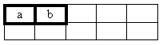
The Horizontal filter mode really cleans up the edges on vertical and diagonal edges that are close to being vertical. In the following figure, the closer the edges are to being horizontal, the less effective the filter is. This is a supersample mode, so each fragment is rendered by the Xbox GPU.
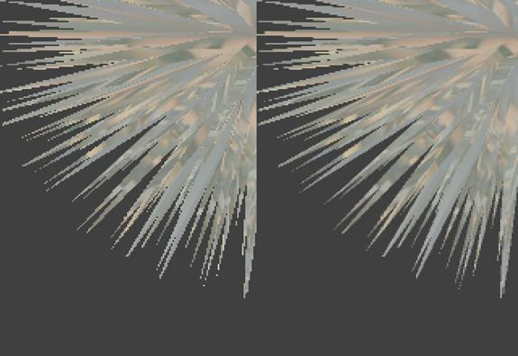
Illustration No Antialias 2x Supersample Linear Horizontal Filter
The Vertical filter mode works by doubling the resolution in the vertical direction. Thus, there are actually two scan lines for each final scan line in the front buffer. The corresponding pixels on the two scan lines are averaged, and the result is written to the front buffer. So, if the first pixel in the first scan line is a, and the first pixel in the second scan line is b, the result written to the first pixel in the first scan line of the front buffer is (a + b)/2.
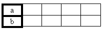
The Vertical filter mode really cleans up the edges on horizontal and diagonal edges that are close to being horizontal. In the next figure, the closer the edges are to being vertical, the less effective the filter is. This is a supersample mode, so each fragment is rendered by the Xbox GPU.
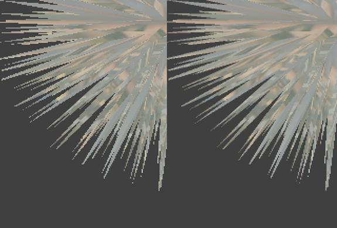
Illustration No Antialias 2x Supersample Linear Vertical Filter
The Multisample Linear Filter works by drawing two lines per scan line, with the second line offset by half a pixel. It then averages the colors of the two lines at each pixel.
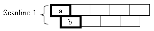
So, if the first pixel on the first of the two lines is a, and the first pixel of the second line is b, the resulting color copied to the front buffer is (a + b)/2. It gives good results, as illustrated below. The resolution of the back buffer is doubled in the vertical direction with this mode. Since this is a multisample mode, the fragments are rendered for fragment a and copied into fragment b.
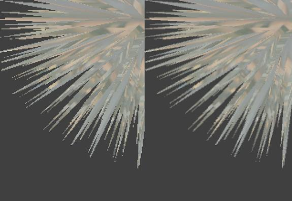
Illustration No Antialias 2x Multisample Linear Filter
The multisample Quincunx Filter also works by drawing two lines per scan line, with the second offset by half a pixel. The resolution of the back buffer is doubled in the vertical direction. The difference is in the way that the filter operates when it copies the back buffer to the front buffer.
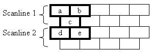
The filter looks at five fragments in an X pattern and averages them according to the formula (a + b + 4*c + d + e)/8. This gives much better results then the straight linear filter at the cost of a much more complex mathematical operation per front buffer pixel. You can see the results in the following example.
Illustration No Antialias 2x Multisample Quincunx Filter
This mode and the 2x multisample linear mode also dramatically impact z-buffer compression. The reason is the fragments in every other scan line are offset by 0.7 pixels diagonally. As a result, the z-buffer cannot be compressed very well because the number of bits it stores for compression cannot cover the new gradients. To quote from Mike Abrash's white paper Depth-Buffer Compression and Performance Implications, "When we drew a full-screen quad in non-antialiased mode, we didn't lose compression until the z gradient from top to bottom went from 0 to 0.62. When we did the same in the two-sample multisampled mode, we lost compression when the z gradient went from 0 to 0.0005." This is very significant for pixel fill performance because the Xbox GPU reads the depth-buffer for occlusion culling at the start of the per-pixel pipeline and at the end of the pipeline if no occlusion occurred. The depth-buffer reads are 75 percent faster if the depth-buffer is compressed. The depth-buffer almost certainly won't be compressed in the 2x multisample modes, however, so we pay an additional penalty for every non-occluded pixel. We also lose the early z reject with an uncompressed depth-buffer. The Performance Investigator for Xbox (PIX) shows the current compression levels in the depth-buffer; it also shows how badly this is hurting performance.
The back buffer size for 4x modes is quite large (1280×960). Unless the game is underutilizing the fill capability of the Xbox GPU, these modes will probably not be useful. The frame rate hit will be large and almost certainly unacceptable. They do produce nice antialiased images, however.
All of the 4x modes increase the back buffer by two times in both the horizontal and vertical directions. The differences are in the filters used to copy the back buffer to the front buffer and in whether the fragments are created using the multisample or the supersample technique.
In 4x multisample linear mode, the filter simply averages the four fragments together (a + b + c + d)/4. Since it is a multisample mode, fragment a is rendered and then copied to fragments b, c, and d.
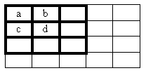
The result is shown in the following example.
Illustration No Antialias 4x Multisample Linear Filter
In 4x multisample Gaussian mode, the filter is much more complex. Instead of averaging the results together, it uses this formula:
(a + 2*b + c + 2*d + 4*e + 2*f + g + 2*h + i)/16
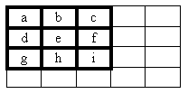
The result is shown in the following example.
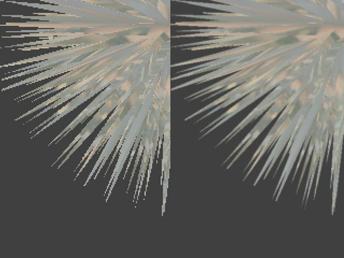
Illustration No Antialias 4x Multisample Gaussian Filter
The 4x supersample linear mode simply averages the fragments together, as follows:
(a + b + c + d)/4.
Each fragment is rendered separately.
The result is shown in the following example.
Illustration No Antialias 4x Supersample Linear Filter
This is the most bandwidth-intensive of the 4x modes. It uses a Gaussian filter and renders each fragment separately.
It also produces a nice antialiased image.
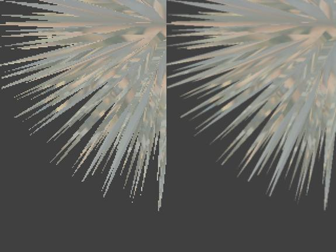
Illustration No Antialias 4x Supersample Gaussian Filter
The 9x antialias modes have no utility. The fill rate required is beyond the capabilities of the Xbox GPU. The memory requirements are interesting as well. A 9x back buffer using 32-bit color with a 32-bit depth/stencil buffer would require 1920 * 1440 * 8 bytes at 640×480 resolution. This is 22,118,400 bytes. Since the Xbox has 64 MB of RAM, this consumes more then one third of the available memory for the back buffer alone! The 9x modes are included here for completeness.
Illustration No Antialias 9x Multisample Gaussian Filter
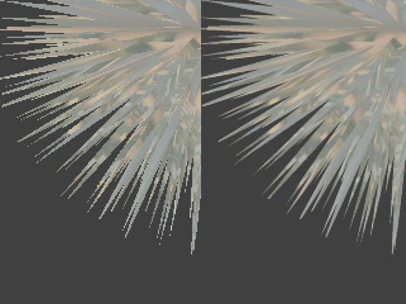
Illustration No Antialias 9x Supersample Gaussian Filter
The Xbox GPU also has an edge antialiasing mode. When this mode is active, each polygon gets an alpha-blended edge.
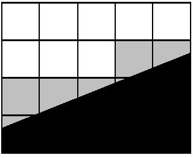
The above diagram shows how the edge is calculated. The black is the polygon edge. The grey fragments are partially covered by the polygon edge. The Xbox GPU stores six bits of information about the amount the grey fragment is covered by the polygon edge. It then converts this information into an alpha value for the fragment. Thus, the grey fragments are drawn with alpha blending and 64 levels of alpha transparency, as determined by how much of the polygon edge covered the fragment.
This helps blend the edges into the background. Edges come out antialiased but without as much of the blur as in the multisample or supersample modes.
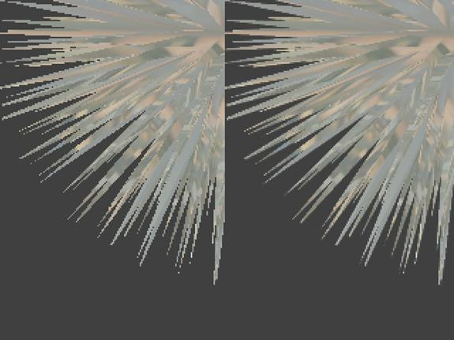
Illustration No Antialias Edge Antialias
There are a number of important things to know about edge antialiasing. The following render states must be set for the polygons to be edge antialiased.
Edge antialiasing works by adding an alpha edge to each polygon, which means there will be a wire frame set of artifacts if the objects are not rendered solid first. This happens because the alpha edges write to the depth-buffer just as the solid polygons do. The alpha edges take on the color behind them in the back buffer, so the color in the back buffer must be correct for that location. This is usually a win over the normal antialiasing modes because a larger back buffer is not needed to get antialiasing. Also, only the desired objects can be antialiased. Cars, for example, would not benefit from having this on for their windows because they are already alpha-blended (in theory!) and won't look any better with an alpha edge.
You would think a useful optimization would be to draw the edge-antialiased polygons in wire frame mode because we care only about the edges of the polygons. This should cut down significantly on the polygon fill requirement for the second pass. However, for reasons that are unclear, this runs about half as fast as drawing the entire polygon.
The ideal solution to this problem would be to draw only the edge polygons with edge antialiasing on after rendering the object un-aliased because only the edges will benefit from this. Determining the edges of an object is beyond the scope of this paper, but there are many interesting solutions to this problem on the Web.
Unfortunately, this method requires some advanced scene management because the scene behind the object to draw edge antialiased must be present in the back buffer. If it is not, the alpha edges will look very wrong when the scene does draw. Again, this is because the alpha edges also write to the depth buffer. Thus, if this method is used on the cars in a racing game, the track and any cars in front of the rendering car must already be in the back buffer or there will be edge artifacts. Most games need some kind of alpha sort anyway, so such scene management is generally straightforward to do. It can be difficult to add this at the last minute. Planning to use edge antialiasing and planning what objects will be edge antialiased will make edge antialiasing much easier to use and the game much better looking.
Also, note that only the edges will be antialiased. Textures with sharp lines in them that are not along a polygon edge, like decals on a car, will not benefit from using this mode.
Another potential method of achieving some antialiasing in a scene is to shrink the back buffer slightly. The subsequent copy to the front buffer will put in some antialiasing when if filters the back buffer as it scales it up. See the below example screenshot. This is the result when the back buffer is scaled by 0.9 in both the horizontal and vertical directions.
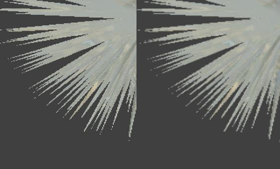
Illustration No Antialias Back Buffer Scale 0.9
This has the added advantage of reducing the amount of fill bandwidth the scene is using. It is not free, since the scaled down back buffer must be filtered and expanded to the front buffer. The performance hit is smaller than even the simplest multisample or supersample mode.
It does look at bit blurry in the screenshot, but it's easy to test in-game to see if it's a win at all.
When calling IDirect3D8::CreateDevice, set the BackBufferCount member of the D3DPRESENT_PARAMETERS structure to 2 instead of 1. Right before clearing the screen and the start of rendering, call IDirect3DDevice8::SetBackBufferScale with the scale size of the buffer desired. Blurring out the HUD images (gauges, text, status displays, etc.) is undesirable, so call
IDirect3DDevice8::Swap( D3DSWAP_COPY );
first to copy and scale the current back buffer to the next back buffer in line. Then draw the HUD elements (gauges, text, status displays, and so on) and call
IDirect3DDevice8::Swap( D3DSWAP_FINISH );
This will do the final copy from the second back buffer to the front buffer. Call these instead of the usual call:
IDirect3DDevice8::Present( NULL, NULL, NULL, NULL );
See the Antialias sample for the exact source code used.
If the game is a port from a different console and if there isn't a lot of time to change content to take advantage of the extra processing and graphics horsepower of the Xbox, try turning on the 4x modes. We've found that most games when ported to the Xbox with no content changes can use this mode and still run at their target frame rate. If the 4x modes don't run at the target frame rate, try the 2x Quincunx mode.
If you want antialiasing in the game, plan for its use up front. There is a performance cost paid for using the full screen antialias modes on the Xbox and many implementation issues related to using the edge antialias modes. Antialiasing, in any of its many modes, will be difficult to implement when the game is nearly complete.